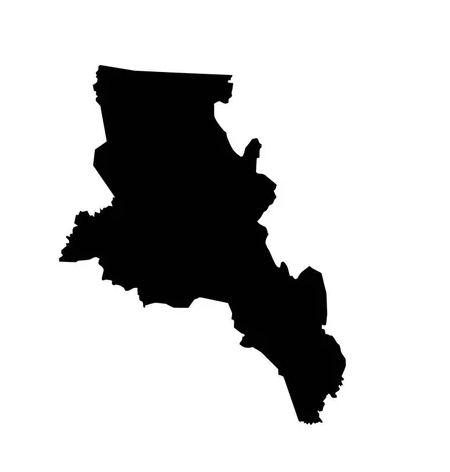

Catamarca
Sobre Catamarca
Sobreviven en ella los ecos de su mágico nombre de raíz indígena: “Fortaleza de la falda”, con sus altos picos montañosos de nieves eternas.
Situado en el Norte Grande Argentino, nuestro territorio fue habitado por la población nativa de la región durante varios milenios hasta la llegada de los conquistadores españoles, a mediados del siglo XVII. Luego de la Revolución de Mayo de 1810, adherimos inmediatamente al proceso emancipador y en 1821 obtuvimos nuestra autonomía como provincia.
Catamarca también te ofrece
Museos

Espacios donde conocer nuestra rica historia cultural a través del tiempo.
Inti Raymi

Una celebración para recuperar y recrear un valioso legado ancestral.
Campo de Piedra Pomez

Resguardamos los tesoros más preciados en el corazón de la Puna catamarqueña.